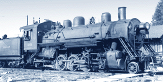

Last updated: 10 September, 2025
| Builder: | ALCO, Schenectady |
| Build #: | 61535 |
| Date: | 1920 |
| Engine #: | 1000 (4) |
| Railroad: | Santa Maria Valley (SMV) (HH) |
| Website: | www.laparks.org/traveltown traveltown.org |
| Email: | Travel.Town@lacity.org |
| Location: | Griffith Park, Travel Town, 5200 Zoo Dr, Los Angeles, CA 90027 |
| GPS: | 34.153791, -118.309056 Parking. |
| Phone: | 323-662-5874 |
| Status: | Display |
| Notes: | Donated in 1953 by Santa Maria Valley Railroad |
Subject to change: | |
| Hours: | Monday thru Friday 1000 to 1700 (10AM to 5PM) Weekends & Holidays 1000 to 1700 (10AM to 5PM) Closed Thanksgiving and Christmas 2 (The Museum Gift Shop closes at 4:45PM) |
| Admission: | Donations only. There is no parking/admission fee to visit Travel Town! 2 |
In 1914, the City of San Francisco approved plans to develop Yosemite's Hetch Hetchy watershed into a dam, obtaining priority rights to the storage of flood water off the Tuolumne River. The roads to this remote site were poor, so the first step toward building the dam was to build a railroad. The first nine miles were completed in 1915, and a contract was awarded in 1916 to build 59 additional miles of road, connected to the Sierra Railway at a point which would later be known as Hetch Hetchy Junction.
In 1917, San Francisco began purchasing locomotives. Included in the list of purchases was the Pickering Lumber #2, which began its career as Hetch Hetchy #2, along with this engine, the Santa Maria Valley #1000, which was originally called the Hetch Hetchy Railroad #4. The road was essentially complete in 1918, and regularly scheduled service was initiated. Charges for freight were 12 cents per mile per ton, or $10.15 per ton to the dam site; passengers paid $5.00 for a ride to the dam. In April of 1923, the O'Shaughnessy Dam was finished, its speedy completion attributed to fine railroad service; as much as 400 tons of cement were transported daily on this line.
In 1924, the Hetch Hetchy ceased as a common carrier and sold five of the railroad's six locomotives. This engine was sold to the Newaukum Valley Railroad in Washington state, where it was re-numbered #1000, and, in 1944, was sold to the Santa Maria Valley Railroad. Built in 1911, this standard gauge line served the oil refineries in the Santa Maria vicinity, but found its greatest success hauling produce to the Southern Pacific's mainline.
| Class: | |
| Gauge: | 4'-8½" |
| F.M.Whyte: | 2-8-2 (Mikado) |
| Drivers: | 48" |
| Gear Ratio: | |
| Tractive Effort: | |
| Weight: | 97 tons |
| Weight on Drivers: | |
| Length: | 79' 10" |
| Boiler: | |
| Cylinders: | 20"x28" |
| Top Speed: | |
| Horsepower: | |
| Fuel: | |
| Fuel Type: | |
| Water: | |
| Steam psi: |